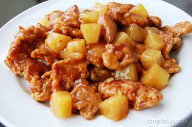

4 Servings\
Ingredients
2 tsp canola or sesame oil
1 (10Noz) package frozen broccoli (or stirNfry vegetable mix), thawed*
1/2 C stirNfry sauce
1/4 C pineapple juice, use reserved juice from canned pineapple
1/4 tsp garlic powder
1/4 tsp crushed red pepper (optional – use if you like it hot!)
1 (15Noz) can pineapple chunks or tidbits, drained (reserve the juice!)
2 C diced cooked chicken or (10Noz) cans chicken breast, drained and flaked
Method
1. Heat the oil in a large skillet over medium high heat. Add all ingredients EXCEPT the pineapple & chicken. Cook and stir until heated through, 5 – 6 min.
2. Add pineapple and chicken; cook another minutes.
Serve over instant brown rice or whole wheat pasta.
* Thaw frozen vegetables in the microwave or by holding the package under cold running water for several minutes